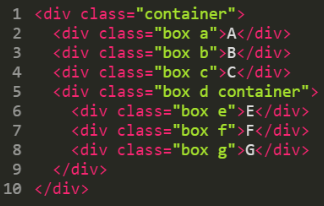
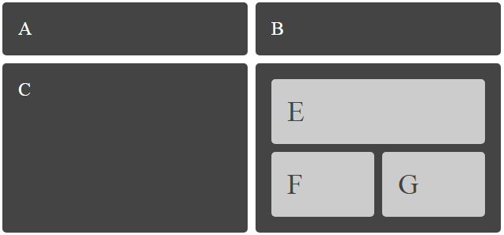

A people without the knowledge of their past history, origin and culture is like a tree without roots
— Marcus Garvey
THE PAST:
- Tables
- Floats
- Positioning
- Inline-block
- Frameworks
- Flexbox

His Majesty GRID
CSS Grid Layout (aka "Grid") is a two-dimensional grid-based layout system
Nested Grid
 Grids vs Others
Use Grid!